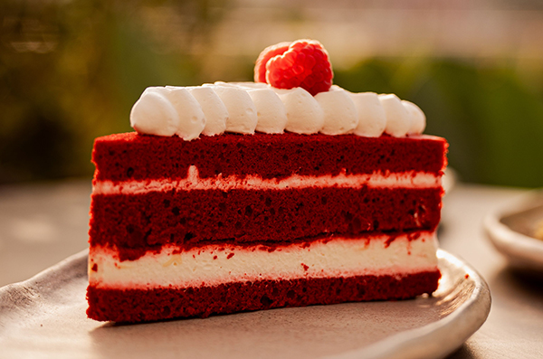

Red Velvet Cake
Red velvet cake is much more than vanilla cake tinted red. This recipe produces the best red velvet cake with superior buttery, vanilla, and cocoa flavors, as well as a delicious tang from buttermilk. My trick is to whip the egg whites, which guarantees a smooth velvet crumb. From Sally’s Baking Addiction.
Ingredients
- 3 cups of cake flour
- 1 tablespoon of baking soda
- 2 tablespoons of unsweetened cocoa powder
- ½ tablespoon of salt
- ½ cup of unsalted butter, softened to room temperature
- ¼ cup of canola or vegetable oil
- 4 large eggs, separated with room temperature
- 1 tablespoon of pure vanilla extract
- 1 teaspoon of distilled white vinegar
- 1 to 2 teaspoons of red food coloring of choice (beet powder, gel or liquid)
- 1 cup of buttermilk, room temperature
Instructions
- Preheat oven to 350°F (177°C).
- Grease the cake pans, line with parchment paper rounds, then grease the parchment paper.
- Whisk the flour, baking soda, cocoa powder, and salt together in the large bowl.
- Using a handheld or stand mixer fitted with a paddle attachment, beat the butter and sugar together on medium-high speed until combined, about 1 minute. Scrape down the sides and up the bottom of the bowl with a rubber spatula as needed.
- With the mixer on low speed, add the dry ingredients in 2-3 additions alternating with the buttermilk.
- Pour in the red food coloring. Beat in your desired amount of food coloring just until combined.
- In the medium bowl, vigorously whisk or beat the 4 egg whites on high speed until fluffy peaks form, about 3 minutes. Gently fold into cake batter. The batter will be silky and slightly thick.
- Divide batter between cake pans. Bake for 30-32 minutes or until the tops of the cakes spring back when gently touched and a toothpick inserted in the center comes out clean. If the cakes need a little longer as determined by wet crumbs on the toothpick, bake for longer. However, careful not to overbake as the cakes may dry out.
- Remove cakes from the oven and cool completely in the pans set on a wire rack. The cakes must be completely cool before frosting and assembling.
- After applying the frosting, refrigerate cake for at least 30-60 minutes before slicing. This helps the cake hold its shape when cutting.
- Cover leftover cake tightly and store in the refrigerator for 5 days. Frosted cake or unfrosted cake layers can be frozen up to 2-3 months. Thaw overnight in the refrigerator and bring to room temperature before decorating or serving.